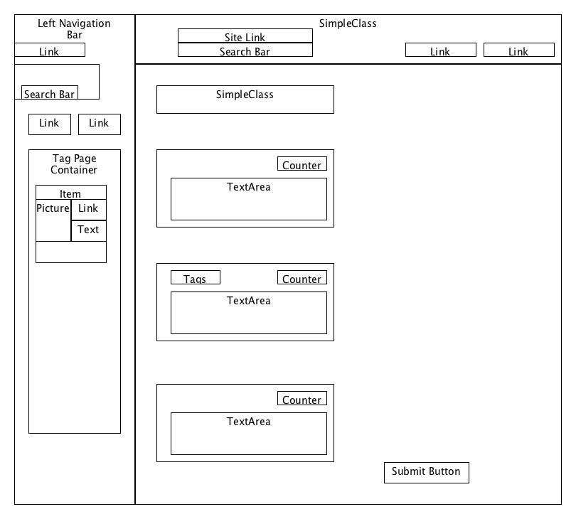
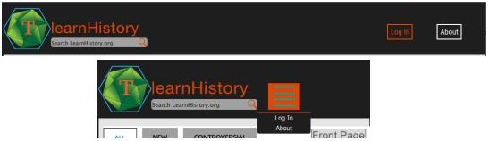

Introduction
Website Purpose
Topic of the site
The website's aim to to provide a platform for users to quickly learn and share information on a variety of historical topics. All users can submit articles, which have a limit of 300 characters and can be voted as "liked" or "disliked". The site aims to build on elements of Wikipedia, Reddit and Twitter.
Accessing Content
The Site provides several means of accessing content. The site has a 'front page' which lists a selection of all new articles submitted to the site. This 'Front Page' allows new articles to be listed by their popularity, their submission date or how 'controversial' they are. Controversial articles are those which have received relatively large amounts of 'likes' and 'dislikes'.
Articles are also accessible by their 'tag'. Users can associate up to four 'tags' with each article submitted:
In a way that mirrors the 'front page', 'sub-pages' are made up of articles with the same tag. Users are allowed to choose their own tags: if an article with a tag that does not currently exist is submitted, this article will be the only article in this tag's 'sub-page'. Articles will appear in more than one 'sub-page'.
Users can also directly go to a tag 'sub-page' of their choice:
Design of the site
Many of my pages have a relatively complex HTML structure, with a wide variety of HTML elements used. In this section, I will diagrammatically show the structure of each page in my site, and outline all the types of HTML elements that I utilised.
HTML
Many of my pages have a relatively complex HTML structure, with a wide variety of HTML elements used. In this section, I will diagrammatically show the structure of each page in my site, and outline all the types of HTML elements that I utilised.
Main Template
The Main Template for the site includes the left and top navigation bar. The content on each page is displayed in the third page section:

New elements Used:
- <a>
Used for multiple links, including the top banner and top and left navigation items.
- <ul> and <li>
For creating top and left Navigation bars, and lists of tags for each article.
- <div>
Extensive use to build page structure.
- <hr>
used to separate tag sub page listing in left navigation bar.
- <input>
Various uses of different types of input tags, including text, password and search. Different attributes such as placeholder and value.
- <img>
Many of the pictures on these pages have been implemented using the img tag.
index.html & sub_page.html
The article listing section was challenging due to the number of different types of elements required to be placed and positioned within each other.
New Elements Used:
- <input>
Used input of type radio button to create the "tab" structure on this page
newArticle.html
This page is the form that users would use to submit an article.

New Elements Used:
- <Form>
Used to group form elements in this page. Get method used to send information to next page on submission of form.
- < Input Type: File>
Used to allow users to upload an image to be associated with their article
- <Textarea>
Used instead of input box as it is a more appropriate element for use to write larger amount of text. Placeholder attribute used instead of value.
- <Input Type: Submit>
- Uses <method="get"> to send data entered in textareas to article page
article.html
This is a mock up of how an example user submitted article would look. This page has a complex HTML structure due to the number of functionalities and styles that I aimed to achieve within it. Despite this, I believe the article page still has a clean and minimalist feel.
New Elements Used:
- <p >
Used to hold the main text content of each article.
CSS
The complex structure of many of my pages required a significant time investment to ensure all elements were positioned correctly. I made significant use of the box model, editing the padding and margin of elements. Additionally, making the site look good was a key aim, and I spent a lot of time styling individual elements. I will pick out some examples of how I have used CSS in this site: literally every element has some kind of CSS styling, and it is not feasible to discuss them all. However, I will try to convey the amount of detail I have applied to styling elements in my site.
Tags
- stylized the outer <ul > element that contained the tag items, changing its margin size, setting font to be used and setting text to be capitalised automatically.
- set background colour of list items, and increased the padding to give the appearance of a 'box' round the text.
- Set a border and set a border-radius to give curved corners.
- Set margin to give some space between list items.
- set the on hover behaviour (as shown below) to change background colour.
Banner
- Significant stylizing and positioning of search bar: Rounded corners, changing the background and placing a background image of a magnifying glass to replace the default.
- Stylizing wide-screen navigation bar. Placing border round text. On hover behaviour (as shown below) of changing colour. This on hover behaviour is further stylised via putting in place a transition of the colour change.
- css background image property used to place logo.
- Used tutorial to create drop down menu for smaller screens. Changed the CSS significantly to fit with my site style and requirements.

Log-In Box
- Stylized form elements to have rounded corners and inner drop shadows.
- positioning and correct scaling of size of login box.
- background set to transparency to give the effect that the content behind the login box is inaccessible.
- on hover behaviour of 'X' on login screen. Changes to darker colour.
- using google API font Oxygen.
- used z-index to ensure login screen appeared on top of all over elements.
Go-To Browser
- rotated position 90 degrees. Changes in position are transitioned over .3 seconds.
- Transitions on hover colour change to orange.
- stylized search bar with customer background picture.
- positioning and width changes to allow javascript to rotate element for use when clicked.
Left Navigation Bar
- Positioning the subpage summary elements was challenging: each is made up of a list of one tags, text, and a thumbnail. Used float right.
- Styled the 'top' and 'Most Recent' links: turns to black and underlined with green. Used a background image of a block of colour that is repeated along the x axis to create underline. Changed margin to create space between text and underline.
- Edited tag spacing and positioning to be appropriate for left navigation bar format.
- <hr> tag customised with CSS to create a black, thick line to separate elements.
Article Page Tabs
- Followed tutorial to create tab container for article list. Again, I changed the style and appearance of the tabs significantly from the tutorial. Getting the content box to hold all my article elements was challenging. Works on firefox, chrome and safari.
- Uses heavily styled radio buttons and z-indexes to achieve tab effect. Each tab is actually a radio button, which brings another content page to the top to be displayed.
Article Banners
- Followed parallax scrolling tutorial to create attractive scroll effect within articles. Had to adapt and change tutorial code significantly for my site. Achieved through using perspective and z-indexes, works on safari, firefox and chrome.
- created transparent block to behind article title using opacity settings.
- Used % width to create blocks of colour to represent votes that articles will get.
- list of tags css adapted for use in article headers
Javascript
Log In Box
- Login Box is hidden element on page load
- transitionVerticlePosition() and showClass() attached to click event on "login" button in the banner.
- hideClass() is attached to "x" on login box
- transitionVerticlePosition() simultainiously moves verticle position of login box and increases opacity, to create an attractive transition in. I did not use a tutorial for this.
- I used information from the web on the technique used to slow the effect, using a nested, recursive function call to setTimeout().
Go To Browser
- turnGoToStyleOn() attached to goto text on side of the screen for click event.
- Toggles a second css styled class to take effect on 'goto'. This causes the rotation and width of the element to change, and swing out to reveal a search bar.
- The 'x' on this element causes it to 'swing' back to being hidden by removing the class style.
- Tutorial not used for this.
Mobile/ Small Screen navigation bar
- resize event listener attached to window. When window width becomes 740, changeNavigation() removes the 'wide-screen' navigation bar and replaces with drop-down.
Left Navigation Bar
- 'top' and 'Most Recent' show and hide 'LeftNavBarContent_MostRecent' and 'LeftNavBarTop' elements and all the child elements they contain.
Counting Words
- count() is attached to the Title and Article submission TextAreas.
- Counts the amount of words in these area through retrieving all entered characters in the corresponding text area, and placing them in an array. This array is then splut by delimiter ' ', and the length of this array counted.
- The correct html is generated and placed into the appropiate element on page.
- If the number of words in a text area is greater than a specified amount, all keystrokes except "delete" are disabled, preventing further text entry. Additionally, the counter is turned red.
- A slight delay has been placed between a 'click' event and count() being called. This allows the current keystroke to be taken into consideration (It was being ignored if count() was immediately called).
Generating Tags
- The tag input box on the article submission page has extra functionality: It will show the user the tags they are creating, which are delimited by ';'
- The data in the textarea is placed into an array upon each click event, and split by delimiter ';'. Spaces are trimmed, and empty tags removed from the array e.g. Tag1; tag2;;;;;; tag3
- The relevant HTML is generated above the tag box to display the tag elements that are seen accross the website.
- After the user has entered four tags, they will be unable to enter anything further.
Creating A New Article
- As an example of what will happen with a user submits a new article, when you press "Submit" on the article submission page, a new article template will be filled in with the data.
- All formating (such as paragraph breaks) is kept in the body of the article
- Tags are generated in the header
- The title is generated.
Article Voting
- Click events are attached to 'dislike' and 'like' elements in the article pages.
- When the thumbs up or thumbs down is clicked, it becomes coloured to show it is active
- If, when a button is clicked, the other is active, the colours will switch: You cannot vote an article up AND down.
User Page
- Real time searchable drop and drag tag preferences box. I found this very challenging, as I had to track what the user had put in each box to generate the correct HTML each time they did a search.
- The tags that the user can choose are loaded from tagTracker object. In future, this object will be populated from database.
- The tagTracker objects holds two arrays, one storing a list of tags that the user has chosen as preferences, the other storing all the tags there are to choose from.
- when the user types in the search box, I iterate over the array holding all possible tags, and only generate the HTML for those matching the users' search. I use javascripts regular expression functionality for this.
- When the user drags a tag to their "save" box, this gets removed from the array storing all possible tags for that user, and stored in the array holding chosen tags.
- I destroy all displayed tags and regenerate them each time a 'drag and drop' occurs. This is to update the generated tag ID's so that they make sense: I challenge I had was preventing to tags being generated with the same ID: both arrays need to know the tag IDs that the other has generated.
- Finally, I used local storage on the browser to save user preferences.
Node Server
- Resolved issue with the node server where it would not parse query strings correctly. This was a simple change in the end, but it took some time to understand how the server worked, before I realised I could just remove the '?'
Painting Skills
I tried both gimp and photoshop. I used Gimp for the small menu icon, but found that I could not achieve the effect I wanted for a more complex picture, due to less custom brush options.

This picture was made by creating and defining my own custom brushes, and then creating the grungy background with them. I then used them to blend in various pictures of images. Finally, I sharpened the image, and placed some colour balance layors over the black and grey brushwork.
This image is created for article banners when the user has not uploaded any.

Drawing Skills
Most of the images used on the site have been designed by me in Inkscape. The strategy that I used for creating images was finding stock images on the web, and then making vector images out of them. I had to identify the best way to draw them, and pick good-looking "layers" to create shape and shade. I saved my images using svg and png formats.
Some of the images I have listed below may seem quite trivial, but I have included them to emphaize that I made everything myself.
References
http://alistapart.com/article/customunderlines : Creating Custom Underlines
http://www.webdesignerdepot.com/2013/08/how-to-use-html5s-drag-and-drop : Creating Drag and Drop interfaces
http://sidelinesportsreport.com/wp-content/uploads/2014/08/Thumbs-up-thumbs-down-_zps93f6ab9d.gif : Modelling for thumbs up/ down drawings
http://keithclark.co.uk/articles/pure-css-parallax-websites/ : Tutorial for achieving parallax scrolling
http://www.onextrapixel.com/2013/07/31/creating-content-tabs-with-pure-css/ : Tutorial for creating content tabs
http://geektnt.com/how-to-remove-x-from-search-input-field-on-chrome-and-ie.html : Tutorial for customising input fields
http://cssmenumaker.com/blog/flat-dropdown-menu-tutorial : Tutorial for making drop down menus